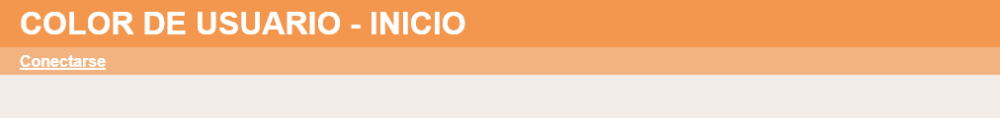
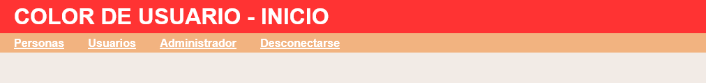
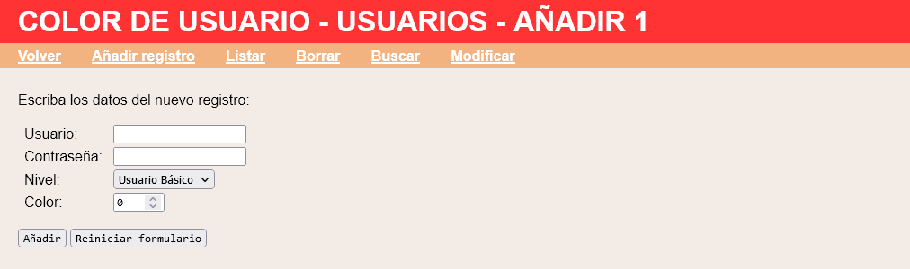
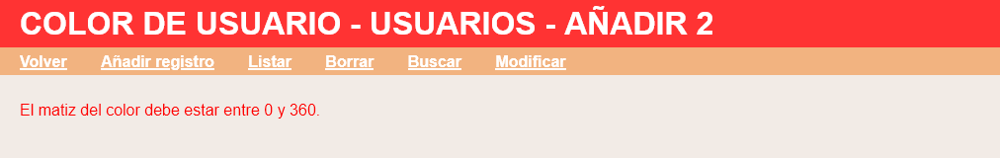
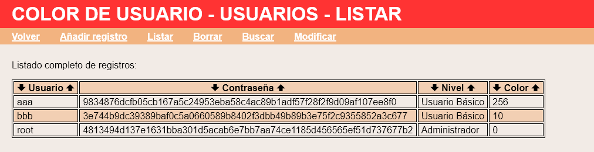
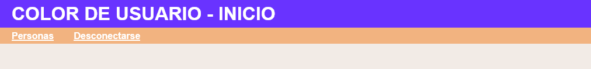
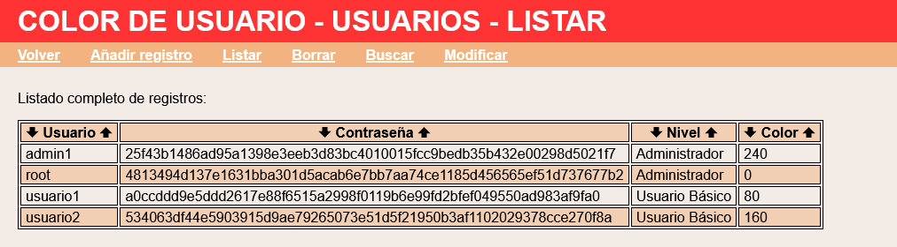

En este ejercicio se debe ampliar la aplicación proporcionada en la plantilla de manera que la tabla de usuario incluyo un campo numérico (número entero de de 0 a 360) que corresponda al matiz de color de la cabecera h1 de las páginas de la aplicación. La aplicación deberá funcionar tanto en MySQL/MariaDB como en SLite.


<link rel="stylesheet" href="../comunes/mclibre-php-proyectos.css" title="Color">
<style>
h1 { background-color: hwb(0 20% 0%); }
</style>
</head>

<tr>
<td>Color:</td>
<td><input type="number" name="color" value="0" size="7" min="0" max="360"></td>
</tr>



